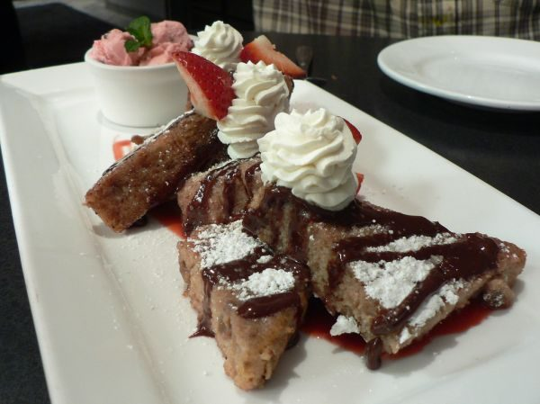

Strawberry French Toast

Photo: stu_spivack (CC BY-SA 2.0)
A kid-friendly French toast made by dipping cream cheese and strawberry jam sandwiches in an egg-and-milk batter and frying until golden.
Directions
- Spread cream cheese and strawberry jam on bread making sandwich.
- Mix eggs, milk, salt. Dip sandwich in mixture, both sides. Fry both sides until done.
- Spread the whipped cream cheese and strawberry jam on the bread to make sandwiches.
- In a bowl, mix the eggs, milk, and salt.
- Dip each sandwich in the egg mixture, coating both sides.
- Fry both sides until done.
Goes well with
https://lizotte.cool/recipe/strawberry-french-toast.html